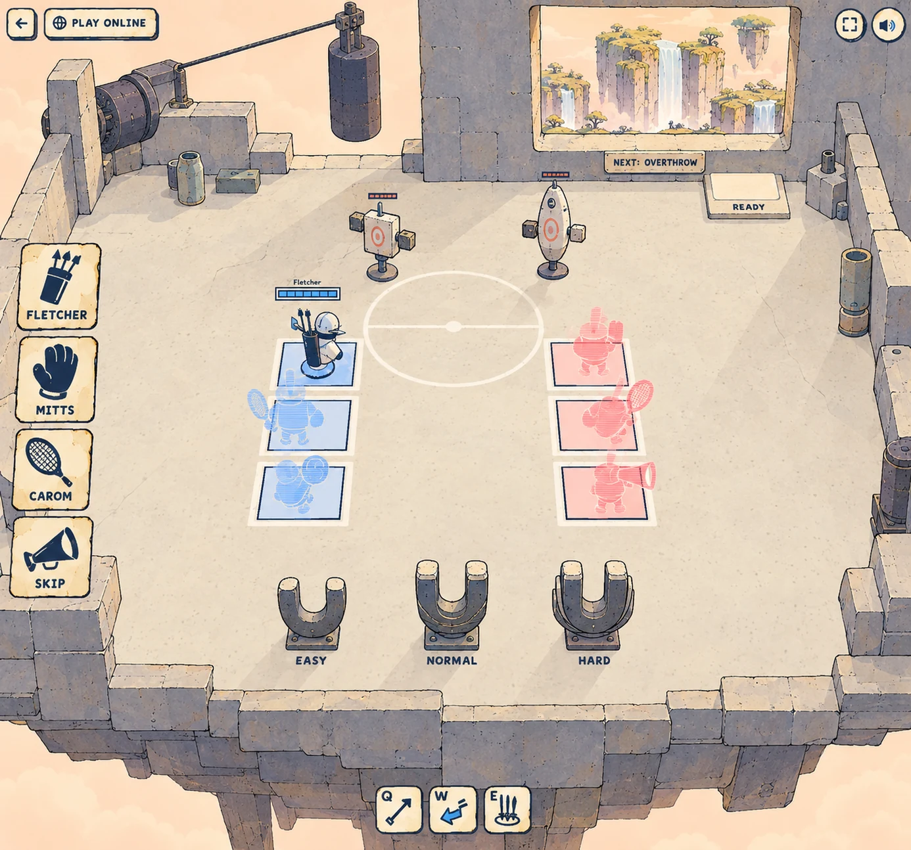
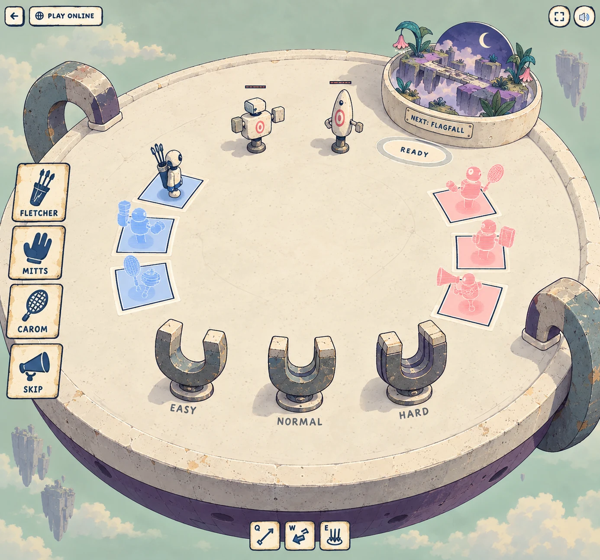
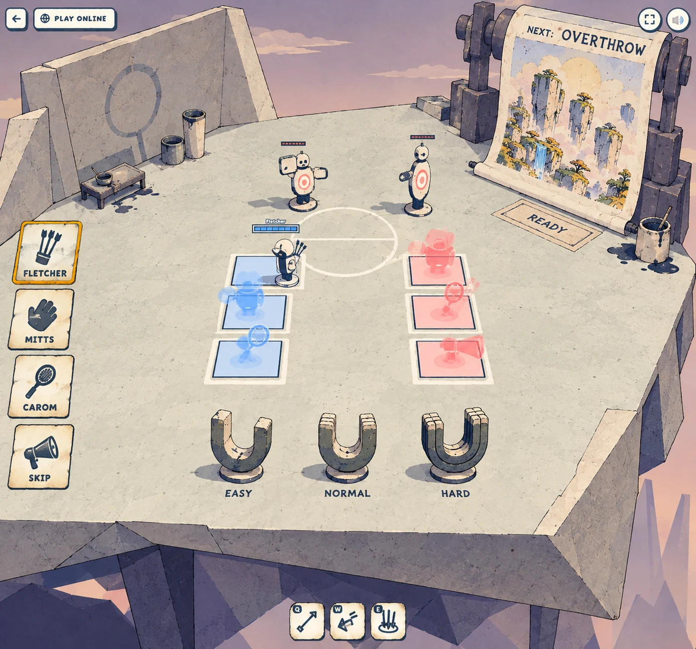
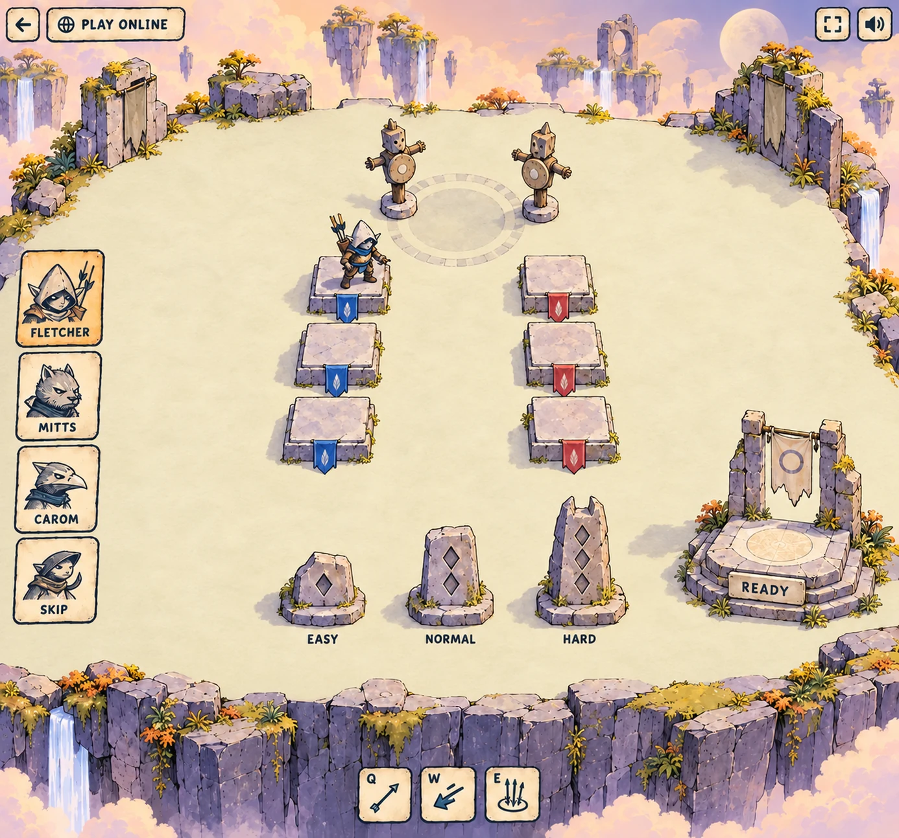

dodgethis / lobby / v2
Three homes. Two destinations.
Each lobby is a world of its own, kept intact whichever map you pick. A window, a miniature or a printed sheet shows where the match will take you. The new directions keep the floating bots and horseshoe magnets, with painted cards and a quieter, stranger sense of place.
1Counterweight
v2 / 01

A rectangular room hangs beneath a vast empty sky. A blunt stone wall, exposed line and enormous counterweight make the window feel like a working part of the home.
Showing the next map
Only the view through the weighted window and its paper destination label change. Shown: Overthrow.
Stone blocks, one aperture, simple cylinders and a line. Keep the floor quiet; the mechanism gives the place its identity.
Download WebP · 1386 × 12942Pocket weather
v2 / 02

A huge ceramic saucer sits in magnetic cradles. Players assemble on its plain floor around a small turning world held in a weather bowl.
Showing the next map
Only the bowl’s miniature map, little sky cap and destination label change. Shown: Flagfall.
One shallow dish, flat floor, curved U cradles and a tiny map model. The diorama stays outside the sparring space.
Download WebP · 1386 × 12943Printyard
v2 / 03

The home is a heavy sheet of folded stone. A blunt roller prints the next destination onto a hanging deckled sheet: a physical promise of where you are going.
Showing the next map
Only the map picture on the sheet and its destination label change. Shown: Overthrow.
Broad angular planes, one cylinder and a hanging image plane. The yard keeps its shape and light for either map.
Download WebP · 1386 × 1294v1 · the earlier day and dusk isles
Kept for reference. These preceded the shared-home rule and used solid seats, banners and difficulty stones; those choices are superseded by v2.
